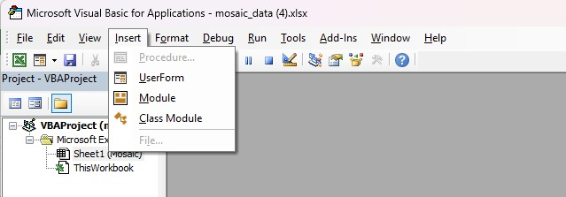
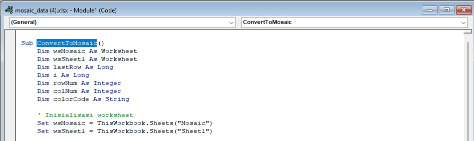
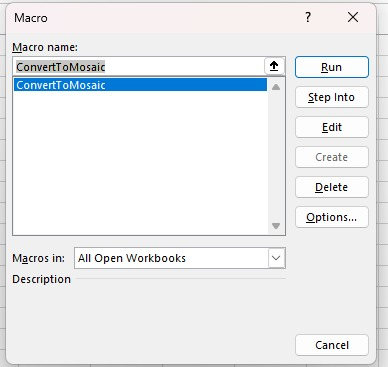

×
1. Copy teks ini terlebih dahulu,
Sub ConvertToMosaic()
Dim wsMosaic As Worksheet
Dim wsSheet1 As Worksheet
Dim lastRow As Long
Dim i As Long
Dim rowNum As Integer
Dim colNum As Integer
Dim colorCode As String
' Inisialisasi worksheet
Set wsMosaic = ThisWorkbook.Sheets("Mosaic")
Set wsSheet1 = ThisWorkbook.Sheets("Sheet1")
' Hapus semua format dari Sheet1 terlebih dahulu
wsSheet1.Cells.ClearFormats
' Temukan baris terakhir pada sheet 'Mosaic'
lastRow = wsMosaic.Cells(wsMosaic.Rows.Count, "A").End(xlUp).Row
' Loop melalui setiap baris di sheet 'Mosaic'
For i = 2 To lastRow
rowNum = wsMosaic.Cells(i, 1).Value
colNum = wsMosaic.Cells(i, 2).Value
colorCode = wsMosaic.Cells(i, 3).Value
' Mewarnai sel yang sesuai di Sheet1
On Error Resume Next
wsSheet1.Cells(rowNum, colNum).Interior.Color = RGB(Val("&H" & Mid(colorCode, 2, 2)), _
Val("&H" & Mid(colorCode, 4, 2)), _
Val("&H" & Mid(colorCode, 6, 2)))
On Error GoTo 0
Next i
End Sub
2. Setelah itu buka folder excel yang telah di download,
3. Klik
ALT + F11
4. Setelah dialog muncul, klik menu insert dan pilih module

5. Masukkan script yang sudah disediakan tersebut.

6. Kamu dapat mengubah 'ConvertToMosaic' menjadi 'Pola1' atau sebagainya untuk mempermudah.
7. Kamu juga dapat menyesuaikan Worksheet
' Inisialisasi worksheet
Set wsMosaic = ThisWorkbook.Sheets("Mosaic")
Set wsSheet1 = ThisWorkbook.Sheets("Sheet1")
sesuai dengan yang kamu gunakan.
8. Simpan perubahan dengan tombol
Ctrl + S, Setelah itu silahkan close.
9. Kemudian, klik
Ctrl + F8 untuk mengaktifkan script.

10. Jalankan pada Worksheet yang sudah kamu pilih.
11. Selesai.